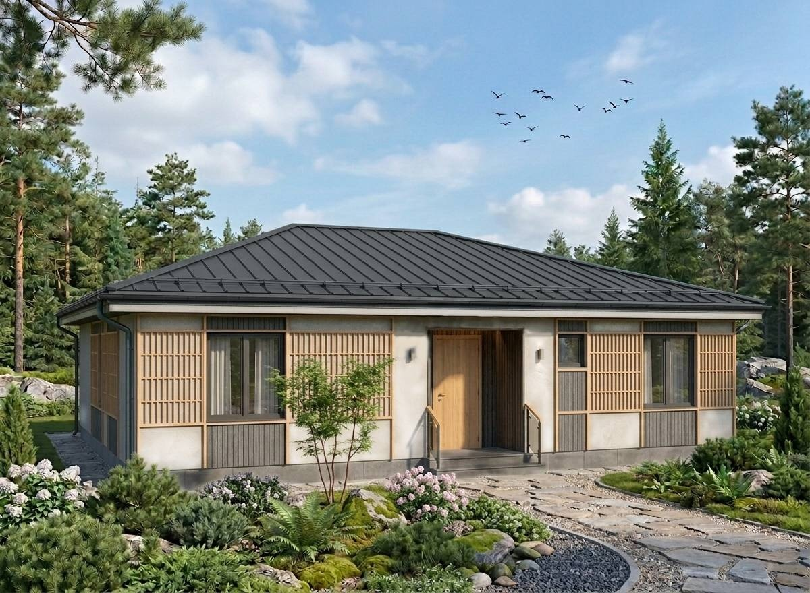
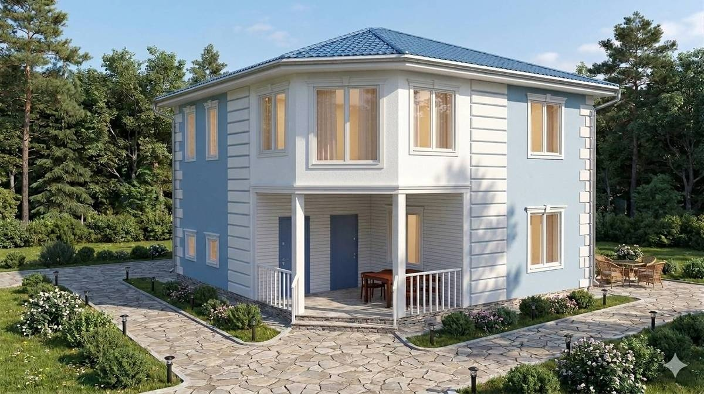

Уют под крышей · Санкт-Петербург и область
Загородные дома в Ленинградской области
Строим загородные дома и коттеджи. Выберите проект и обсудите строительство и состав работ.
Посмотреть домаПРИМЕРЫ РЕШЕНИЙ
Сравните варианты домов
Одноэтажные и двухэтажные проекты с разными фасадами. Посмотрите решения и уточните планировку и комплектацию.

Проект двухэтажного дома
Уют под крышей · Санкт-Петербург и область
Проект двухэтажного дома
Одноэтажные и двухэтажные проекты с разными фасадами. Посмотрите решения и уточните планировку и комплектацию.
Обсудить строительство